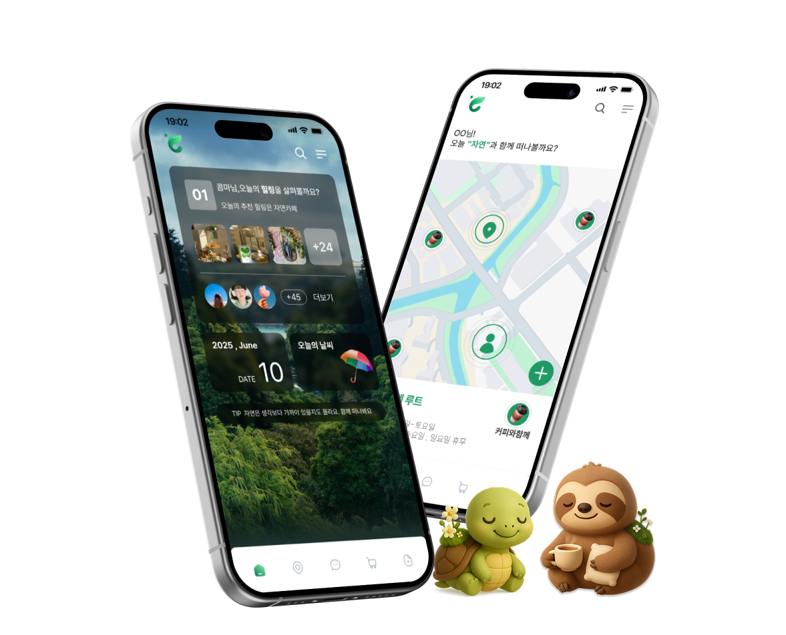
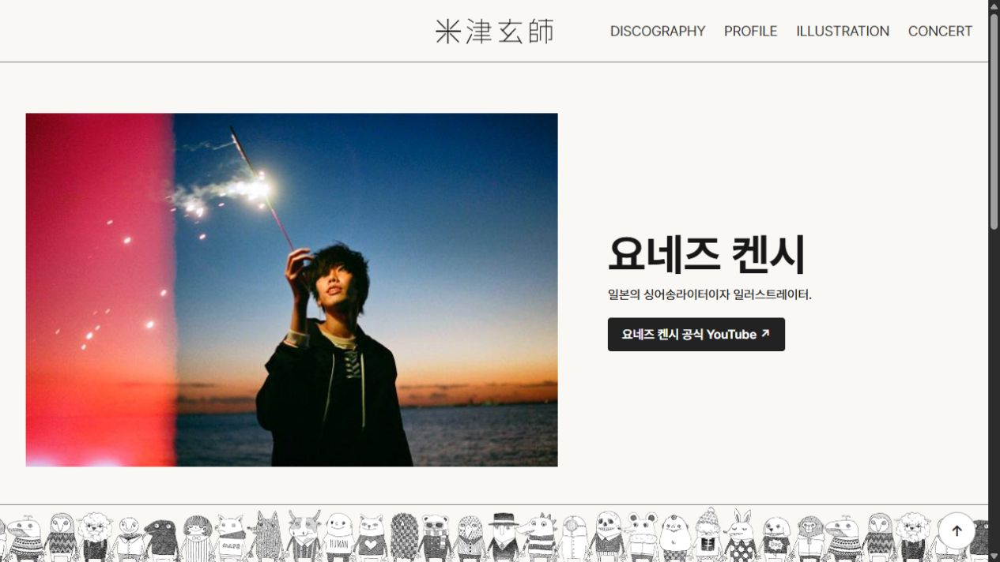
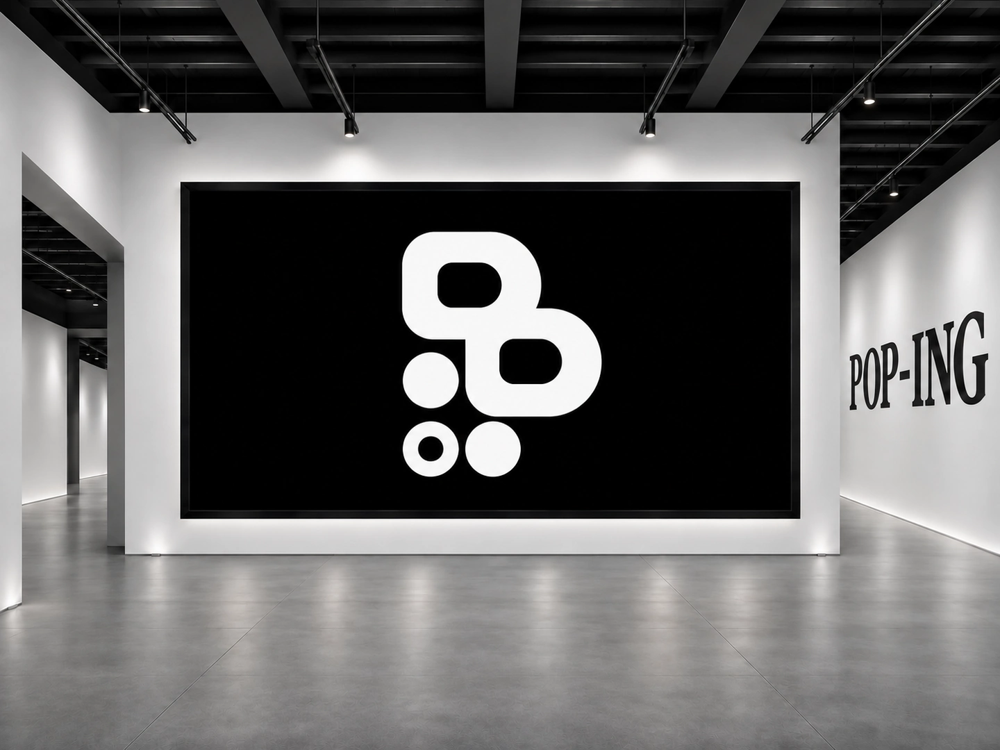
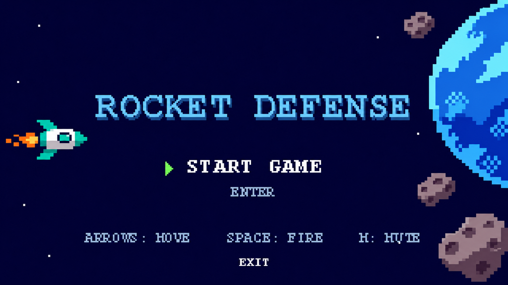

JavaScript
선택한 카드를 중앙으로
카드 중심 좌표와 목록 영역 중심의 차이로 스크롤 위치를 계산했습니다. 앱 소개는 같은 인덱스로 이미지와 설명을 연결해 함께 전환합니다.

Com,ma인터랙티브 콘텐츠 제작자 이재범입니다.
3D 맵 전반의 구현과 UI 제작, 로딩 개선과 아바타 모션 작업을 담당했습니다.
01 / SELECTED WORK
화면과 코드를 연결하는 작업 기록웹·공간·게임을 만들며 고민한 과정과 결과입니다.
02 / CAPABILITIES
프로젝트에 적용한 원리와 판단웹·3D·게임에서 다룬 원리와 구현 경험입니다.
각 프로젝트에서 작업 과정과 검증 범위를 확인할 수 있습니다.
카드 중심 좌표와 목록 영역 중심의 차이로 스크롤 위치를 계산했습니다. 앱 소개는 같은 인덱스로 이미지와 설명을 연결해 함께 전환합니다.

Com,ma공통 그리드와 제목 줄바꿈으로 카드의 정렬을 맞췄습니다. 앵커 링크는 섹션 id에 연결하고 고정 헤더에 가리지 않도록 스크롤 여백을 고려했습니다.

요네즈 켄시파일 최적화로 데이터의 양을 줄이고, 변환·복사를 줄여 표시 전 처리 부담을 낮췄습니다. 아바타는 뼈대에 맞춰 모션을 적용하고 보정했습니다.

POP-ING초당 속도에 Time.deltaTime을 곱해 이동량을 계산했습니다. 길게 누르기와 연타에 같은 0.25초 발사 간격을 적용해 입력 방식에 따른 차이를 줄였습니다.

ROCKET DEFENSE03 / ABOUT ME
배움을 작업으로 연결하기사용자가 직접 경험하는 인터랙티브 콘텐츠를 만드는 이재범입니다.
낯선 기술은 작은 기능으로 나눠 이해하고, 동작을 확인하며 범위를 넓혀가고자 합니다.
화면의 결과뿐 아니라 구조와 동작을 어떻게 구성했는지 함께 기록합니다.
LET’S TALK
웹·3D·인터랙티브 콘텐츠를 함께 만드는 기회를 기다립니다.